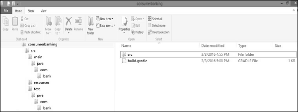

This chapter explains how to build a Java project using Gradle build file. First, we have to add Java plugin to the build script because it provides tasks to compile Java source code, run unit tests, create Javadoc and create a JAR file. Use the following line in build.gradle file.
Whenever you add a plugin to your build, it assume a certain setup of Java project (similar to Maven). Take a look at the following directory structure.
If you follow this setup, the following build file is sufficient to compile, test, and bundle a Java project.
To start the build, type the following command on the command line.
SourceSets can be used to specify a different project structure. For example, the sources are stored in a src folder rather than in src/main/java. Take a look at the following directory structure.
apply plugin: 'java'
sourceSets {
main {
java {
srcDir 'src'
}
}
test {
java {
srcDir 'test'
}
}
}
Gradle does not yet support multiple project templates. But it offers an init task to create the structure of a new Gradle project. Without additional parameters, this task creates a Gradle project, which contains the gradle wrapper files, a build.gradle and settings.gradle file.
When adding the --type parameter with java-library as value, a java project structure is created and the build.gradle file contains a certain Java template with Junit. Take a look at the following code for build.gradle file.
apply plugin: 'java'
repositories {
jcenter()
}
dependencies {
compile 'org.slf4j:slf4j-api:1.7.12'
testCompile 'junit:junit:4.12'
}
In the repositories section, it defines where to find the dependencies. Jcenter is for resolving your dependencies. Dependencies section is for providing information about external dependencies.
Usually, a Java project has a version and a target JRE on which it is compiled. The version and sourceCompatibility property can be set in the build.gradle file.
version = 0.1.0 sourceCompatibility = 1.8
If the artifact is an executable Java application, the MANIFEST.MF file must be aware of the class with the main method.
apply plugin: 'java'
jar {
manifest {
attributes 'Main-Class': 'com.example.main.Application'
}
}
Let us consider an example. Create a directory structure as shown in the following screenshot.
Copy the following Java code into App.java file and store it into consumerbanking\src\main\java\com\bank directory.
package com.bank;
/**
* Hello world!
*
*/
public class App {
public static void main( String[] args ){
System.out.println( "Hello World!" );
}
}
Copy the following Java code into AppTset.java file and store into consumerbanking\src\test\java\com\bank directory.
package com.bank;
/**
* Hello world!
*
*/
public class App{
public static void main( String[] args ){
System.out.println( "Hello World!" );
}
}
Copy the following code into build.gradle file and placed into consumerbanking\ directory.
apply plugin: 'java'
repositories {
jcenter()
}
dependencies {
compile 'org.slf4j:slf4j-api:1.7.12'
testCompile 'junit:junit:4.12'
}
jar {
manifest {
attributes 'Main-Class': 'com.example.main.Application'
}
}
To compile and execute the above script use the following commands.
consumerbanking\> gradle tasks consumerbanking\> gradle assemble consumerbanking\> gradle build
Check all the class files in the respective directories and check consumerbanking\build\lib folder for consumerbanking.jar file.